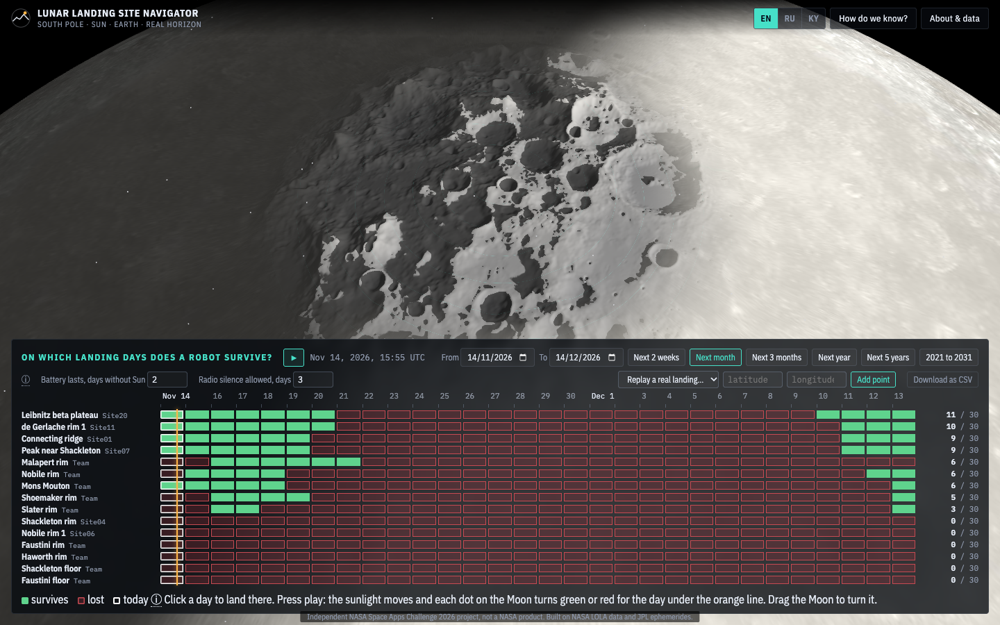
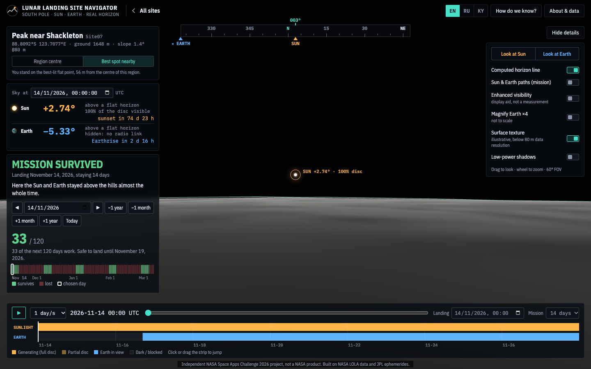
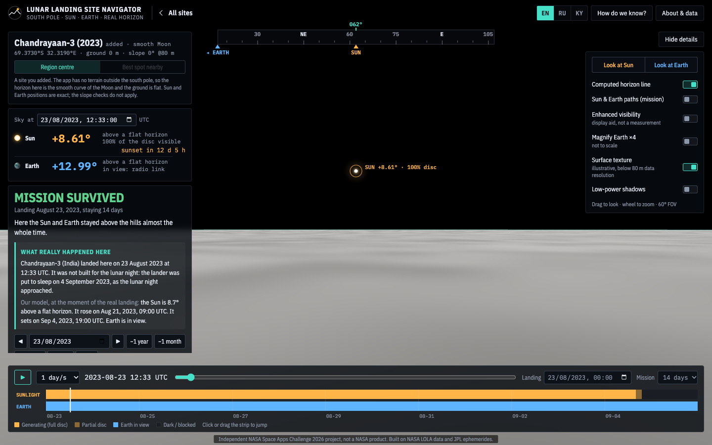

Lunar Landing Site Navigator answers it for any site at the Moon's south pole and any day from 2021 to 2031.
Team 404 agents, Naryn, Kyrgyzstan: Manuchehr, Aruzhan, Kairat, Arsen, Amirbek
NASA Space Apps Challenge 2026, challenge Lunar Landing Site Navigator

Name the team and the challenge. One sentence: we turn Sun and Earth positions into a yes or no for a solar robot. Everything on this slide is a real screenshot of the live app.
1 / 7This is the challenge text in our words. Stress the launch slip: that is the moment our tool is for, a new date and an answer in one click.
2 / 7Point at one green block and one hollow block. Say the limits are ours (2 days of battery, 3 days of radio silence) and the user can change them.
3 / 7
Slope, 2 km slope and distance from the pole are NASA Artemis III rules. Night, radio and first sun are teaching values; NASA says VIPER cannot endure more than 50 hours of darkness, so our 2 days is in that range.
4 / 7
This is the slide that shows the model is right. Say IM-2 openly; judges trust a team that names its limits.
5 / 7LDEM_80S_80M, horizon traced every 0.25° out to 300 km.Every number here is rerun by npm test or the validate scripts in the repo. The offline terrain pipeline is even closer to Horizons: 0.47 arcseconds at worst over all twenty points. If asked about +11.4: we stand 2 m above ground, our terrain is 80 m versus their 60 m, and best spots were picked on our own terrain.
6 / 7End on the app link. "Next" items are plans, not built; say so if asked.
7 / 7